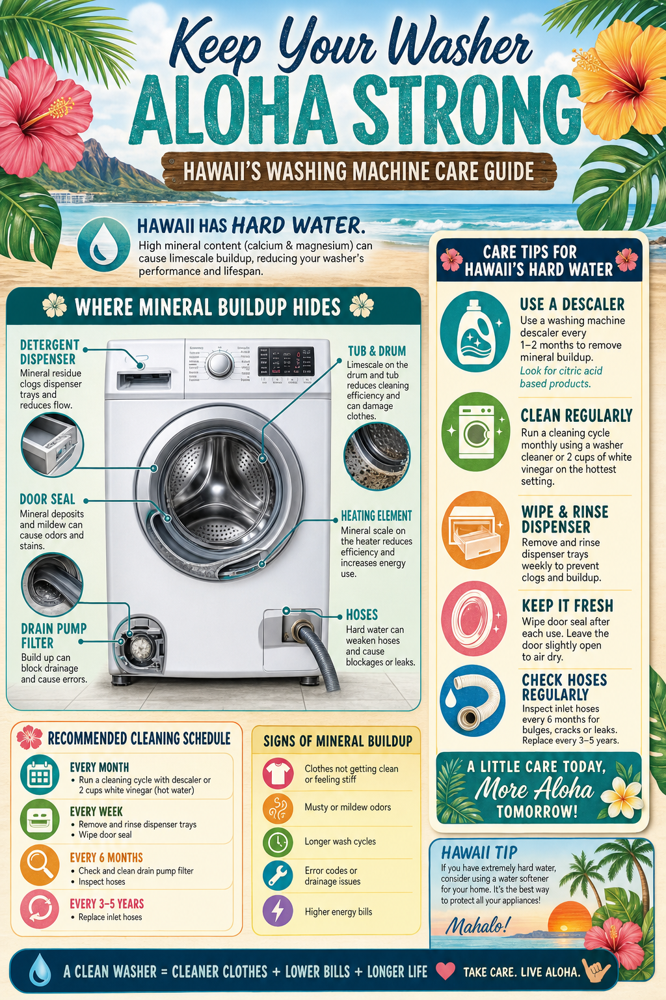

Washer Care Guide for Hawaii Water Conditions

Hawaii's water quality varies significantly by location and source, but many Hawaii Island homes deal with hard water — water with high mineral content, particularly calcium and magnesium. Hard water creates unique challenges for washing machines that require specific care and maintenance practices to keep your washer running well and your clothes cleaning effectively.
Understanding Hawaii's Water
Hawaii Island homes may be served by county water, private well water, or rainwater catchment systems, each with different characteristics. County water in the Hilo area is generally soft due to its volcanic rock filtration, while areas using groundwater sources can have significantly harder water with higher mineral content. Well water and some municipal sources also have varying pH levels that affect washing machine performance. If you're unsure about your water quality, a simple home water test kit provides useful baseline information.
Scale Buildup Prevention
Hard water minerals deposit on the interior drum, heating element, water inlet valve screens, and internal hoses. This scale buildup reduces efficiency, harbors bacteria, and eventually causes component failure. Monthly cleaning with a commercial washing machine cleaner or a hot water cycle with 2 cups of white vinegar helps dissolve mineral deposits. If your water is very hard, consider adding a water softener specifically for the washer supply line — this single investment dramatically extends washer life and improves cleaning performance.
Front-Load Washer Mold Prevention
Hawaii's humidity makes front-load washers particularly vulnerable to mold and mildew growth in the rubber door gasket and drum. This is not just a cleanliness issue — mold can cause unpleasant odors that transfer to clean laundry. After every wash, wipe down the door gasket and leave the door open for several hours to fully dry. Remove laundry promptly after the cycle ends rather than leaving wet clothes in the drum. Run a monthly maintenance cycle with a washing machine cleaner specifically formulated to address mold and bacteria.
Water Inlet Valve Screens
The water inlet valve at the back of your washer has small mesh screens that filter sediment from the water supply. In areas with sediment-bearing water or older pipes, these screens can become clogged, slowing fill times and potentially causing the machine to error or not fill completely. Checking and cleaning these screens annually (or when fill problems arise) is a simple DIY task requiring only a pair of pliers to remove the inlet hoses.
Drainage and Hose Inspection
Hawaii's warm, moist conditions accelerate the deterioration of rubber hoses. Check your washer's fill hoses and drain hose annually for cracks, bulging, or hardening. The rubber in Hawaii's climate can become brittle faster than in cooler environments. Stainless steel braided fill hoses are a smart upgrade — they don't burst and provide decades of reliable service. Replace rubber hoses every 5 years regardless of appearance.
Cool Breeze repairs all washer brands and models across Hawaii Island. Same-day service available most days.
Book Washer Repair